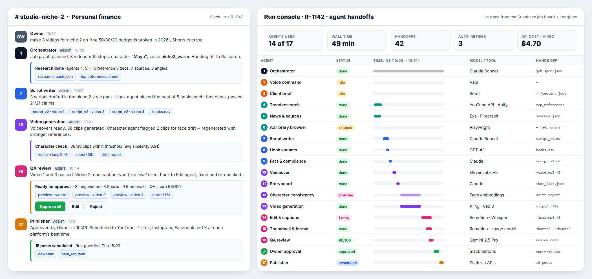
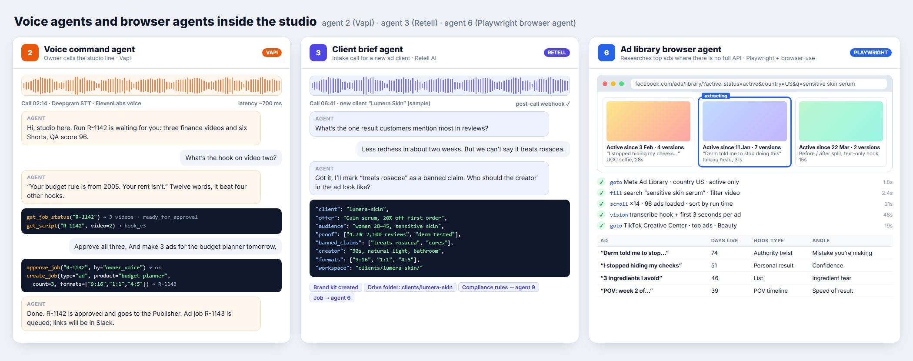
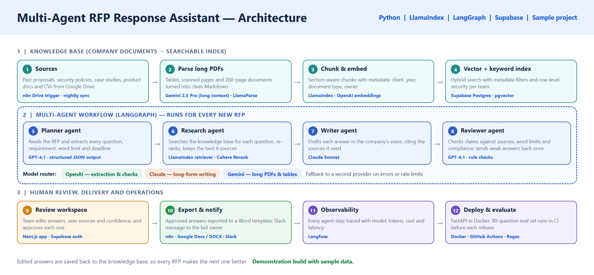

Architecture: 17 agents in six stages, the typed handoff between each stage and the shared layer every agent uses.
Architecture: 17 agents in six stages, the typed handoff between each stage and the shared layer every agent uses.
One run from chat: each agent reports its handoff with links, and the console shows every agent’s status, retries and output.
Voice agents (Vapi, Retell) and the Playwright browser agent at work.The challenge
A creator was launching four content niches and also wanted short UGC-style ads for their own offers and, later, for clients. Doing it by hand meant researching what performs, writing scripts, recording voice, generating video with a consistent character, editing, captioning, cutting vertical versions and posting to five platforms, for every video. One general AI tool could not do all of that reliably. They wanted a small team of bots, each with its own job, that they could run from chat and watch step by step, without anything posting before they approved it.
The solution
I designed and built a multi-agent system of 17 specialised agents. A LangGraph supervisor agent plans each job and hands work from one agent to the next through typed JSON artifacts on a Supabase job board, so every step can be retried or re-run on its own. Each agent posts its handoff to Slack with links to the script, voice and video as they are ready. Two voice agents sit on top: a Vapi agent lets the owner start jobs, hear progress and approve drafts by phone, and a Retell agent runs intake calls with new ad clients and sets up their workspace. Where platforms have no full API, such as Meta Ad Library and TikTok Creative Center, a Playwright browser agent does the research in a real browser.
The 17 agents
- Command layer (agents 1 to 3)The orchestrator turns a chat request into a job graph and supervises the run. The Vapi voice command agent exposes the same actions by phone through function calls (status, read script, approve, create job). The Retell client brief agent interviews new ad clients and writes a structured brief with offer, audience, proof and banned claims.
- Research (agents 4 to 6)The trend agent finds top-performing videos per niche on YouTube, TikTok and Reels. The news agent collects fresh sources with URLs. The ad library browser agent uses Playwright and browser-use to search, filter and scroll Meta Ad Library and TikTok Creative Center, and Claude vision reads each long-running ad’s hook.
- Script (agents 7 to 9)The writer drafts in each niche’s style pack, or a 30-second UGC ad script. The hook agent writes five hooks and scores them against the research. The fact and compliance agent checks every claim against sources and blocks banned ad claims.
- Voice and video (agents 10 to 13)ElevenLabs voiceover with one fixed voice per niche and client, a storyboard agent that times shots to the audio, a character consistency agent that uses the owner’s character sheets and reference images and checks every clip for drift, and a video agent that routes each shot to Kling or Veo 3 through fal.ai, with lip sync for UGC talking shots.
- Edit and QA (agents 14 to 16)Remotion and FFmpeg assemble the video with word-timed captions from Whisper. A format agent makes thumbnails, Shorts, TikTok and Reels cuts, and ads in 9:16, 1:1 and 4:5. The QA agent watches the finished file with Gemini and sends problems back to the agent that caused them.
- Approval and delivery (agent 17)The owner approves, edits or rejects in Slack or by voice. The publisher agent then posts to YouTube, TikTok, Instagram, Facebook and X, with a Playwright fallback where an API is limited. Ads are never posted: finished files go to that client’s own Drive folder.
Agent orchestration
- LangGraph supervisor with a typed state per job and a handoff contract between every agent
- Supabase job board: each handoff, artifact and decision is a row, so runs are resumable and auditable
- Parallel branches: three videos move through the pipeline at the same time
- Targeted retries: a QA failure goes back only to the agent that made the error, not the whole run
- Model router across Claude, GPT and Gemini per task, with failover to a second provider
- Every agent step traced in Langfuse with model, tokens, cost and time
Voice agents
- Vapi agent with Deepgram speech-to-text and an ElevenLabs voice, calling the orchestrator’s API as tools
- Approve, reject or start jobs by phone, with every voice decision logged against the job
- Retell AI intake agent with a post-call webhook that writes the brief and creates the client workspace
- Banned claims from the call passed straight to the compliance agent
Browser agents
- Playwright for reliable, scripted steps; browser-use with Claude for pages that change layout
- Meta Ad Library and TikTok Creative Center research: filters, infinite scroll, ad run time and hook extraction
- Posting fallback for platforms with limited APIs, using saved sessions in the owner’s own accounts
- Playwright end-to-end tests on the run console before every release
Content and ads side by side
- One pipeline, two job types: content jobs end in posting, ad jobs end in file delivery
- Each client has its own workspace, brand kit, voice, characters and Drive folder, so files never mix
- Character consistency from the owner’s own assets: character sheets, reference images and face-similarity checks on every clip
- All accounts, API keys and files stay in the owner’s name
Results
- One chat or voice request produces 3 finished videos, 6 Shorts and 9 thumbnails in under an hour
- About $4 to $6 in API cost per finished video
- Every step visible in Slack with links, and nothing posted without approval
- Handed over with docs and a recorded walkthrough so the owner runs it alone
Other projects

Four agents read an RFP, search company documents, draft cited answers and fact-check every claim.

Ad Library research, written hypotheses and AI image and video ads with a 7-day readout.

Videos transcribed, captioned in the brand voice, approved and scheduled to four platforms.